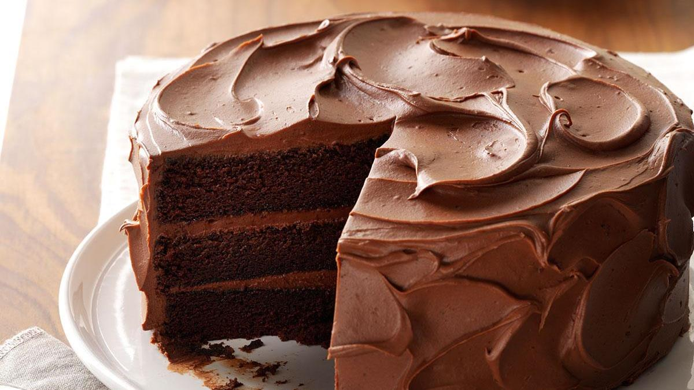

Chocolate Cake Recipe

Ingredients
- 1 cup butter, softened
- 3 cups packed brown sugar
- 4 large eggs, room temperature
- 2 teaspoons vanilla extract
- 2-2/3 cups all-purpose flour
- 3/4 cup baking cocoa
- 3 teaspoons baking soda
- 1/2 teaspoon salt
- 1-1/3 cups sour cream
- 1-1/3 cups boiling water
Frosting
- 1/2 cup butter, cubed
- 3 ounces unsweetened chocolate, chopped
- 3 ounces semisweet chocolate, chopped
- 5 cups confectioners' sugar
- 1 cup sour cream
- 2 teaspoons vanilla extract
Directions
- Preheat oven to 350o F. Grease and flour three 9-in.
- In a large bowl, cream butter and brown sugar until light and fluffy, 5-7 minutes. Add eggs, 1 at a time,
beating well after each addition. Beat in vanilla. In another bowl, whisk flour, cocoa, baking soda and salt;
add to creamed mixture alternately with sour cream, beating well after each addition. Stir in water until blended.
- Transfer to prepared pans. Bake until a toothpick comes out clean, 30-35 minutes. Cool in pans 10 minutes; remove to wire racks to cool completely.
- For frosting, in a metal bowl over simmering water, melt butter and chocolates; stir until smooth. Cool slightly.
- In a large bowl, combine confectioners' sugar, sour cream and vanilla. Add chocolate mixture; beat until smooth. Spread frosting between layers and over
top and sides of cake. Refrigerate leftovers.
Nutrition Facts
1 slice: 685 calories, 29g fat (18g saturated fat), 115mg cholesterol, 505mg sodium, 102g carbohydrate (81g sugars, 3g fiber), 7g protein.
recipe online
Contact Me
Send me an email!
University of Montana
32 Campus Drive
Missoula, MT 59812